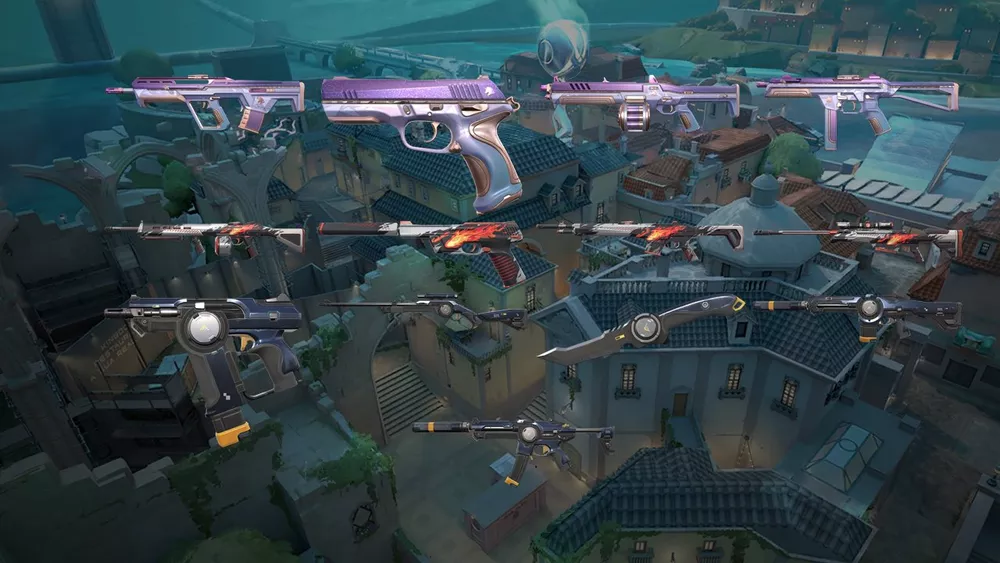

Nesta quinta-feira foram revelados os novos itens do Passe de Batalha para o Valorant. Os novos conteúdos premium para o FPS da Riot Games chegarão na próxima quarta-feira, quando será lançado o Ato 1 do Episódio 5. Além de três novas coleções de skins, o novo passe de batalha contará com acessórios e sprays. Para obter os conteúdos premium, será necessário desembolsar 1.000 Valorant Points (VPs) – em torno de R$ 40,00.

Como de costume, a cada lançamento de um novo ato, o passe contará com mais de 50 itens exclusivos para serem resgatados - entre eles conteúdo Premium e gratuito -, além claro do Epílogo, que dará ao jogador mais itens e Radianite Points (RPs) extras. Conforme a pesoa vai ganhando experiência ao jogar partidas em Valorant e completa missões diárias e semanais, um novo item é desbloqueado para conta.
Para este novo passe, três novas coleções de skins foram reveladas: Cospe-Fogo, Cintilação e Força Tarefa 809. Elas trarão cosméticos para diversos armamentos, sendo esta última linha a única com uma faca inclusa. Além disso, o passe de batalha premium também dará aos jogadores novos cards, sprays e títulos, bem como Radianite Points para usar no upgrade de suas skins.